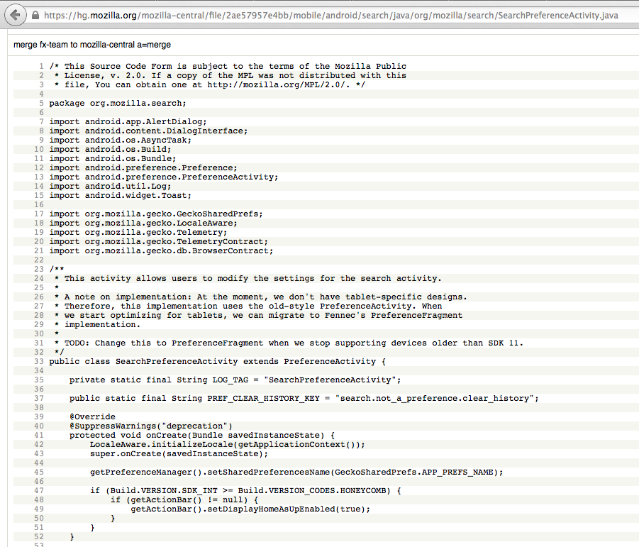

Release
Engineering 101
Building the Pipeline
PLOW Lecture, Ecole Polytechnique, October 2014
Your instructor Kim Moir / @kmoir
This presentation https://github.com/kmoir/Releng-tutorial
Outline - Lectures
- Introductions
- Overview of Release Engineering
- Continuous Integration
- Build and Test pipelines
- Scaling your CI
- Deployment pipelines
- REST APIs
- Further reading
Outline - Labs
- Using your AWS Instance
- Git
- Setup a build on Jenkins
- Build from commit on Jenkins
- Update build scripts to run real build
- Run tests on Jenkins
- Branch your repo and add new jobs
- Add Jenkins Plugins
- Create a pipeline by chaining some builds together
- Deploy Jenkins API
- Query Jenkins REST API
- Challenge Exercise
About: me

About: you
?

© Forest Wander, Creative Commons by-nc-sa 2.0
What is release engineering?
“ a sub-discipline in software engineering concerned with the compilation, assembly, and delivery of source code into finished products or other software components. --Wikipedia ”
We build pipelines

An old rusty pipe on Deception Island in Antarctica. February 2009 © Ville Miettinen, Creative Commons by-nc-sa 2.0


John O'Duinn's Mozilla release pipeline
Role of the Release Engineer
- Focus on writing code to build a pipeline versus a product
- scope depends on where you work
- scale depends on
- number of products
- number of platforms x supported versions
- number of tests
- number of commits
- release cadence

Selena Deckelman's diagram of Mozilla Release Engineering flows
Why is it important?
Firefox for Android source code
Committing code is only the first step
- Build, test, package, sign and deploy
- mobile and desktop apps
- operating systems
- social media, banks, online retailer's web sites....
- also on multiple platforms
- Windows, Linux, Mac
- Mobile: Android, IOS, Blackberry, FirefoxOS
- Optimize the pipeline to make developers more productive
Other related disciplines:
Configuration Management


Build, Test and Release Automation

© Ian Britton, Creative Commons by-nc-sa 2.0
Continous Integration/Deployment
- Evaluating and writing tools
- Optimizing the pipeline for shorter end to end times
- Removing bottlenecks then finding more
- Reducing costs and scaling capacity
Release Management

Repository Management

Package and Dependency Management

Testing and Quality Assurance
- Test harnesses
- Porting tests to new platforms
- Unit tests
- Performance tests
- Regression testing
Long tail of Android support
Building a physical device lab
Going from 3 week to Daily releases
Our project
- Setup a simple build pipeline using Jenkins on AWS
- Setup builds for different branches
- Setup tests
- Install additional Jenkins plugins
- Deploy your build
- Query Jenkins build status using REST API
Lab 1: Using your AWS instance
Goal: Login to your AWS instance via ssh. Query the packages that are available on it
- AWS = Amazon web services
- Shared cloud resources
- Different instance types - different resources - memory, disk, CPU
Lab 2: Git
- Git is a distributed version control system
- Git Design Goals: fast, secure, distributed
- Each commit has a corresponding hash key
- Everyone has a local copy of the history
Lab 2: Git - quick command guide
git clone repo_name #clone a repository locally cd repo_name vi my_file git add my_file #add my_file to git tracking git status #see the status of the git repository git commit -a -m "a comment" #commit the change to the local repository git push #push the change to the remote repository git branch #show current branch git checkout -b v2 #create new local branch
Lab 2: Git exercise
cd /home/ubuntu
git clone https://github.com/salimfadhley/jenkinsapi
cd jenkinsapi
git status
git log
git config --global user.name "Your Name"
git config --global user.email you@example.com
Lab 3: Jenkins
Lab 3: Jenkins
Jenkins welcome page

Lab 3: Jenkins: Create a job
- Select New Item on left side of screen
- In Item name give your job a name
- Select Freestyle project and select OK

Lab 3: Jenkins: Configure a job
- Select Configure on left side of screen
Lab 3: Jenkins: Clone from Git
- Under Source Code Management select Git
- Under Repository URL enter the path to your local git repository i.e. /home/ubuntu/jenkinsapi and select Save
- Then select Build Now on the left hand side of the screen

Lab 3: Jenkins: Look at Output
- When the build finishes, look Console Ouput to see the output

Lab 4: Jenkins: Build on Commit
- Select Configure
- Select Poll SCM
- Under Schedule enter H/2 * * * * to poll Git every two minutes
Lab 4: Jenkins: Commit a file
ubuntu@ip-172-31-31-167:~/jenkinsapi$ cat TODO
TODO:
* Add a testsuite (preferably nose or py.test) which doesn't rely on a local jenkins setup (or instantiates one during test)
* Clean up the fingerprint code
* Clean up the resultset and results code
* Make all objects inherit off jenkins_base where that makes sense
* Add ability to add/modify/delete jobs
* Add ability to query jenkins for plugin data
ubuntu@ip-172-31-31-167:~/jenkinsapi$ vi TODO
ubuntu@ip-172-31-31-167:~/jenkinsapi$ git commit -a -m "updated TODO"
[master d55e7e2] updated TODO
Lab 4: Jenkins: Look at job output

Build on Commit vs build on Trunk
Why is it important?
Bisect, fix bustage or backout
- Use tools such as
- Backout the change set or fix the code
Lab 5: Add more build steps
- Select your build
- Go to Configure
- Under the Build heading, select Add build step
- Select Execute shell

Lab 5: Add more build steps
- Text to put in the Command box
chmod 755 $WORKSPACE/jenkins_build.sh
$WORKSPACE/jenkins_build.sh
- Select Save
- Select Build now
Lab 5: Look at build output
- What can you tell from the build output
Lab 6: Branch your repo and build
- Create a branch in your git repo
- Select Build now
Challenge Exercises
- Create a new build pipeline with a different open source project
- Examples...
- Query the REST API of an open source project and plot it's history
- Examples...
Further Reading
Vertical Slides
Slides can be nested inside of other slides, try pressing down.
Basement Level 1
Press down or up to navigate.
Basement Level 2
Cornify

Basement Level 3
That's it, time to go back up.
Slides
Not a coder? No problem. There's a fully-featured visual editor for authoring these, try it out at http://slid.es.
Point of View
Press ESC to enter the slide overview.
Hold down alt and click on any element to zoom in on it using zoom.js. Alt + click anywhere to zoom back out.
Works in Mobile Safari
Try it out! You can swipe through the slides and pinch your way to the overview.
Marvelous Unordered List
- No order here
- Or here
- Or here
- Or here
Fantastic Ordered List
- One is smaller than...
- Two is smaller than...
- Three!
Transition Styles
You can select from different transitions, like:
Cube -
Page -
Concave -
Zoom -
Linear -
Fade -
None -
Default
Themes
Reveal.js comes with a few themes built in:
Default -
Sky -
Beige -
Simple -
Serif -
Night
Moon -
Solarized
* Theme demos are loaded after the presentation which leads to flicker. In production you should load your theme in the <head> using a <link>.
Global State
Set data-state="something" on a slide and "something"
will be added as a class to the document element when the slide is open. This lets you
apply broader style changes, like switching the background.
Custom Events
Additionally custom events can be triggered on a per slide basis by binding to the data-state name.
Reveal.addEventListener( 'customevent', function() {
console.log( '"customevent" has fired' );
} );
Slide Backgrounds
Set data-background="#007777" on a slide to change the full page background to the given color. All CSS color formats are supported.
Image Backgrounds
<section data-background="image.png">Repeated Image Backgrounds
<section data-background="image.png" data-background-repeat="repeat" data-background-size="100px">Background Transitions
Pass reveal.js the backgroundTransition: 'slide' config argument to make backgrounds slide rather than fade.
Background Transition Override
You can override background transitions per slide by using data-background-transition="slide".
Clever Quotes
These guys come in two forms, inline:
“The nice thing about standards is that there are so many to choose from”
and block:
“For years there has been a theory that millions of monkeys typing at random on millions of typewriters would reproduce the entire works of Shakespeare. The Internet has proven this theory to be untrue.”
Pretty Code
function linkify( selector ) {
if( supports3DTransforms ) {
var nodes = document.querySelectorAll( selector );
for( var i = 0, len = nodes.length; i < len; i++ ) {
var node = nodes[i];
if( !node.className ) {
node.className += ' roll';
}
}
}
}
Courtesy of highlight.js.
Intergalactic Interconnections
You can link between slides internally, like this.
Fragmented Views
Hit the next arrow...
... to step through ...
any type- of view
- fragments
Fragment Styles
There's a few styles of fragments, like:
grow
shrink
roll-in
fade-out
highlight-red
highlight-green
highlight-blue
current-visible
highlight-current-blue
Spectacular image!

Export to PDF
Presentations can be exported to PDF, below is an example that's been uploaded to SlideShare.
Take a Moment
Press b or period on your keyboard to enter the 'paused' mode. This mode is helpful when you want to take distracting slides off the screen during a presentation.